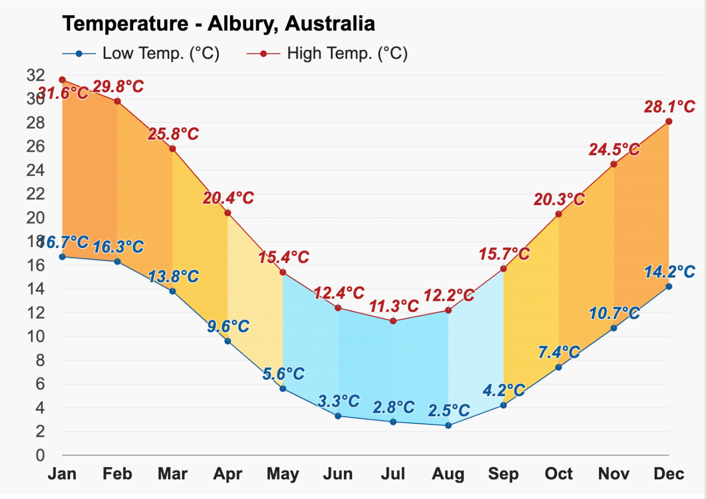
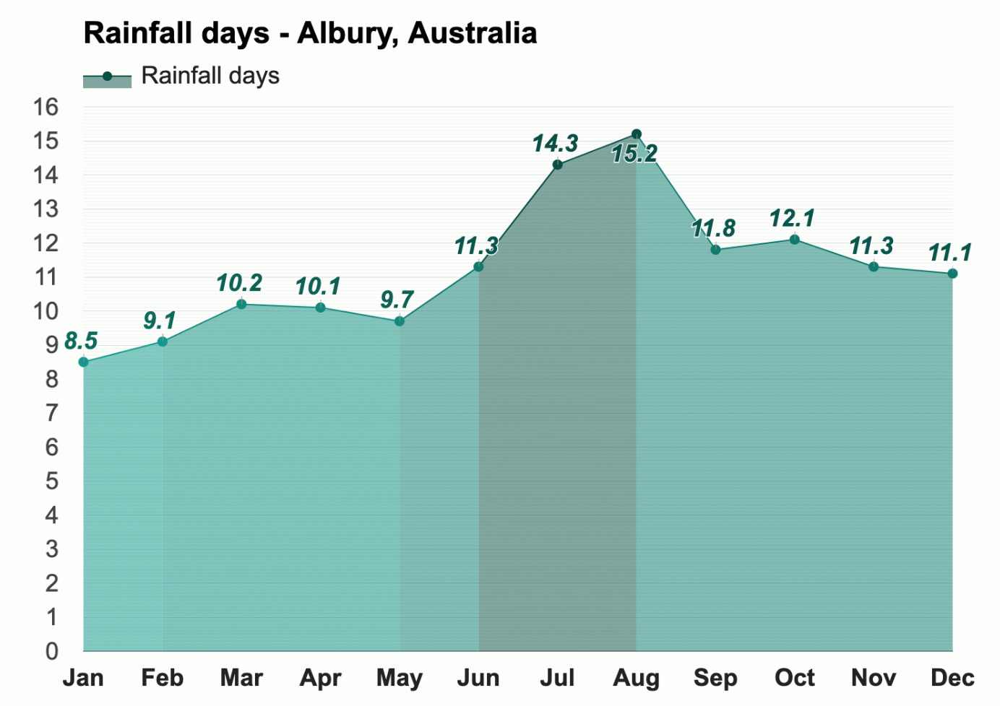
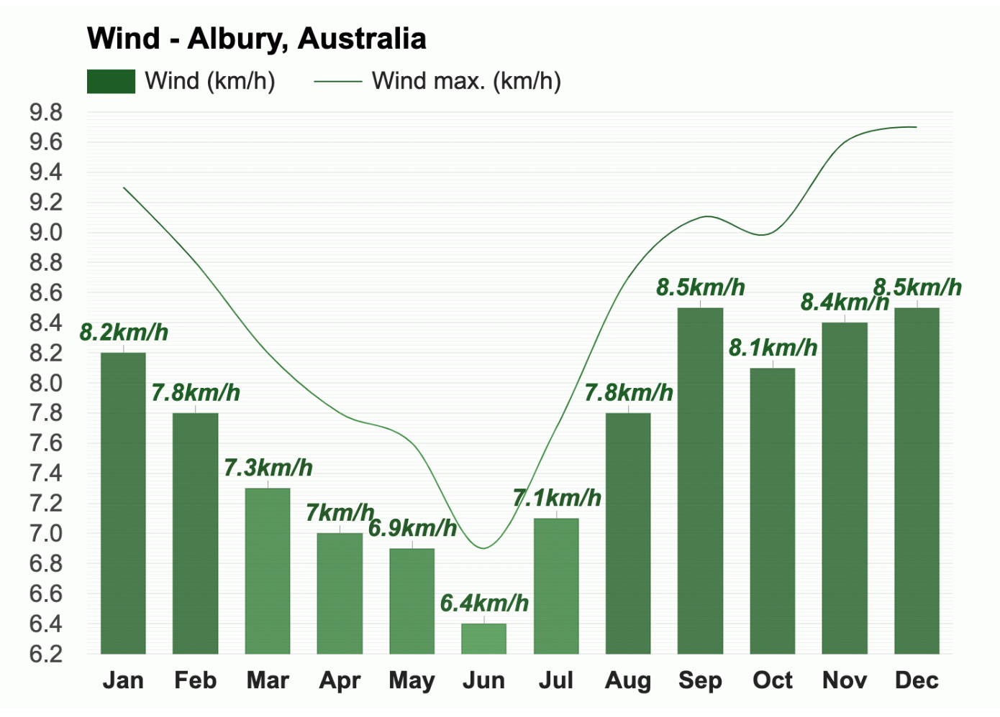

Temperature 
January is the warmest month, with an average high-temperature of
31.6°C (88.9°F) and an average low-temperature of 16.7°C (62.1°F).
The coldest month is July, with an average high-temperature of
11.3°C (52.3°F) and an average low-temperature of 2.8°C (37°F).

The month with the most sunshine in Albury, Australia, is December,
with an average of 11.1h of sunshine, and the month with the least
sunshine is July, with an average of 6h of sunshine.
Rain
Throughout the year, in Albury, there are 134.7 rainfall days, and
592mm (23.31") of precipitation is accumulated.

The month with the least rainfall is January, when the rain falls
for 8.5 days and typically collects 34mm (1.34") of precipitation.
January is also the least humid month, with an average relative
humidity of 49%.
The most humid month in Albury is July, with an average relative
humidity of 88%, and November is the month with the most rainfall.
Rain falls for 11.3 days and accumulates 73mm (2.87") of
precipitation.
Wind

* The above information is sourced from Weather-At. Take a
visit for
more information...
Population 56,036
Median Age 39
Ancestry
The most common ancestries in Albury city were English 28.8%,
Australian 28.5%, Irish 10.2%, Scottish 8.1% and German 5.5%.
Country of birth
81.4% of people were born in Australia. The most common countries
of birth were England 2.0%, India 1.1%, New Zealand 1.1%,
Philippines 0.6% and Bhutan 0.5%.
Religion
The most common responses for religion in Albury city were No
Religion, so described 27.5%, Catholic 25.6%, Anglican 16.9%, Not
stated 9.2% and Uniting Church 4.2%.
In Albury city, Christianity was the largest religious group
reported overall (64.9%).
* The above information is sourced from
Australian Bureau of Statitics. Take a visit for
more information...
Skate and BMX
Over the last 20 years there has been a significant growth in the
interest and participation of action sports such as skateboarding
and BMX.
Albury Skate Park
Thurgoona Skate Park
Springdale Heights Pump Track
Boat ramps
There are five boat ramps in the Albury region, with access to
either the Murray River or Lake Hume. All ramps offer easy access to
the water as well as nearby services.
Lake Hume Village Boat Ramp
Kremur Street
Mungabareena Reserve
Walking and cycling trails
Albury has more than 50 kilometres of interlinked on and off-road
trails, offering walkers and cyclists of all ages, safe and
enjoyable access to our natural environment and places of interest.
Heritage Walk
Nail Can Hill / Ridge Trail
Bungambrawatha Creek Trail
Rainforest Walk
* The above information is sourced from
Albury City Government. Take a visit for
more information...